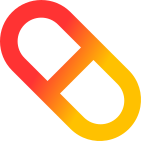

Motor de IA clínico
BioBERTpt + ChemicalX + regras clínicas evidenciadas trabalham em paralelo para detectar interações conhecidas e inéditas.

Nesis.AI analisa prontuários, detecta erros perigosos e entrega alertas acionáveis em tempo real, tudo com o rigor que o SUS merece.
Três pilares que fazem da NesisAI uma plataforma confiável para a Atenção Primária à Saúde.
BioBERTpt + ChemicalX + regras clínicas evidenciadas trabalham em paralelo para detectar interações conhecidas e inéditas.
Análise completa de prontuários em menos de 500 ms, com alertas de severidade graduada: GRAVE, MODERADA ou LEVE.
CPF armazenado apenas como hash SHA-256. Dados do paciente nunca saem da fronteira de privacidade — só identificadores padronizados.
Experimente o dashboard da NesisAI agora mesmo — demonstração aberta e sem barreiras.
Acessar o Dashboard